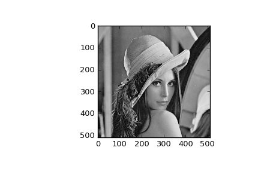

scipy.misc.lena¶
- scipy.misc.lena()[source]¶
Get classic image processing example image, Lena, at 8-bit grayscale bit-depth, 512 x 512 size.
Parameters : None
Returns : lena : ndarray
Lena image
Examples
>>> import scipy.misc >>> lena = scipy.misc.lena() >>> lena.shape (512, 512) >>> lena.max() 245 >>> lena.dtype dtype('int32')
>>> import matplotlib.pyplot as plt >>> plt.gray() >>> plt.imshow(lena) >>> plt.show()
